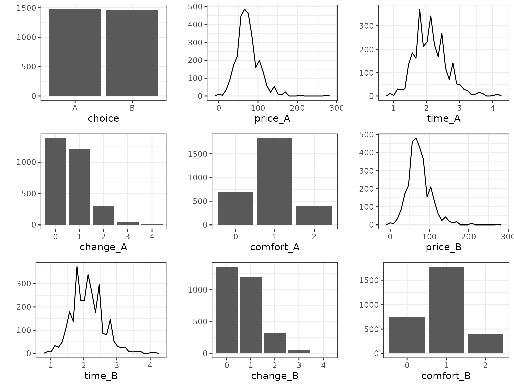
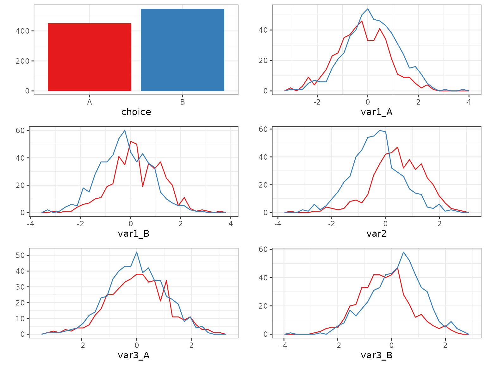

No choice model without choice data, so this vignette1 provides a reference
for data management in RprobitB. We use the
train_choice data set for illustration.
Requirements to choice data
RprobitB helps in modeling the choice of individual deciders of one alternative from a finite set of choice alternatives. This choice set has to fulfill three properties (Train 2009): Choices need to be
mutually exclusive (one can choose one and only one alternative that are all different),
exhaustive (the alternatives do not leave other options open),
and finitely many.
Every decider may take one or repeated choices (called choice occasions). The data set thus contains information on
an identifier for each decider (and optionally for each choice situation),
the choices,
alternative and decider specific covariates.
Additionally, RprobitB asks the following formal requirements:
The data set must be in “wide” format, that means each row provides the full information for one choice occasion.2
It must contain a column with unique identifiers for each decision maker. Additionally, it can contain a column with identifier for each choice situation of each decider. If this information is missing, these identifier are generated automatically by the appearance of the choices in the data set.3
It can contain a column with the observed choices. Such a column is required for model fitting but not for prediction.
It must contain columns for the values of each alternative specific covariate for each alternative and for each decider specific covariate.
Example
The train_choice data set contains 2929 stated choices
by 235 Dutch individuals deciding between two virtual train trip options
based on the price, the travel time, the level of comfort, and the
number of changes. It fulfills the above requirements: Each row
represents one choice occasion, the columns id and
choiceid identify the deciders and the choice occasions,
respectively. The column choice gives the observed choices.
Four alternative-specific covariates are available, namely
price, time, change, and
comfort. There values are given for each alternative.4
str(train_choice)
#> 'data.frame': 2929 obs. of 11 variables:
#> $ deciderID : int 1 1 1 1 1 1 1 1 1 1 ...
#> $ occasionID: int 1 2 3 4 5 6 7 8 9 10 ...
#> $ choice : chr "A" "A" "A" "B" ...
#> $ price_A : num 52.9 52.9 52.9 88.1 52.9 ...
#> $ time_A : num 2.5 2.5 1.92 2.17 2.5 ...
#> $ change_A : int 0 0 0 0 0 0 0 0 0 0 ...
#> $ comfort_A : int 1 1 1 1 1 0 1 1 0 1 ...
#> $ price_B : num 88.1 70.5 88.1 70.5 70.5 ...
#> $ time_B : num 2.5 2.17 1.92 2.5 2.5 ...
#> $ change_B : int 0 0 0 0 0 0 0 0 0 0 ...
#> $ comfort_B : int 1 1 0 0 0 0 1 0 1 0 ...The model formula
We have to inform RprobitB about the covariates we
want to include in our model via specifying a formula
object. Say we want to model the utility \(U_{n,t,j}\) of decider \(n\) at choice occasion \(t\) for alternative \(j\) via the linear equation
\[U_{n,t,j} = A_{n,t,j} \beta_1 + B_{n,t} \beta_{2,j} + C_{n,t,j} \beta_{3,j} + \epsilon_{n,tj}.\] Here, \(A\) and \(C\) are alternative and choice situation specific covariates, whereas \(B\) is choice situation specific. The coefficient \(\beta_1\) is generic (i.e. the same for each alternative), whereas \(\beta_{2,j}\) and \(\beta_{3,j}\) are alternative specific.
To represent this structure, the formula object is of
the form (analogously to mlogit)
choice ~ A | B | C, where
choiceis the dependent variable (the discrete choice we aim to explain),Aare alternative and choice situation specific covariates with a generic coefficient (we call them covariates of type 1),Bare choice situation specific covariates with alternative specific coefficients5 (we call them covariates of type 2),and
Care alternative and choice situation specific covariates with alternative specific coefficients (we call them covariates of type 3).
Specifying a formula object for RprobitB
must be consistent with the following rules:
By default, alternative specific constants (ASCs)6 are added to the model. They can be removed by adding
+ 0in the second spot, e.g.choice ~ A | B + 0 | C.To exclude covariates of the backmost categories, use either
0, e.g.choice ~ A | B | 0or just leave this part out and writechoice ~ A | B. However, to exclude covariates of front categories, we have to use0, e.g.choice ~ 0 | B.To include more than one covariate of the same category, use
+, e.g.choice ~ A1 + A2 | B.If we don’t want to include any covariates of the second category but we want to estimate alternative specific constants, add
1in the second spot, e.g.choice ~ A | 1. The expressionchoice ~ A | 0is interpreted as no covariates of the second category and no alternative specific constants.
To impose random effects for specific variables, we need to define a
character vector re with the corresponding variable names.
To have random effects for the alternative specific constants, include
"ASC" in re.
Example
We specify a model formula for the train_choice data
set. Say we want to include all the covariates price,
time, comfort, and change, which
are all alternative specific (that is, they contain a potentially
different value for each alternative, such as different prices for A and
B), so either of type 1 or type 3. The difference between type 1 and
type 3 is that in the former case, we would estimate a generic
coefficient (i.e. a coefficient that is constant across alternatives),
whereas in the latter case, we would estimate alternative specific
coefficients. Deciding between type 1 and type 3 for these covariates
belongs into the topic of model selection, for which we provide a
separate vignette. For now, we go with type 1 for all covariates and
remove ASCs:
form <- choice ~ price + time + comfort + change | 0Additionally, we specify random effects for price and
time (because we would typically expect heterogeneity
here):
re <- c("price", "time")The prepare_data() function
Before model estimation with RprobitB, any empirical
choice data set choice_data must pass the
prepare_data() function:
data <- prepare_data(form = form, choice_data = choice_data)The function performs compatibility checks and data transformations
and returns an object of class RprobitB_data that can be
fed into the estimation routine fit_model(). The following
arguments are optional:
re: The character vector of variable names offormwith random effects.re = NULLper default, i.e. no random effects.alternatives: We may not want to consider all alternatives inchoice_data. In that case, we can specify a character vectoralternativeswith selected names of alternatives. If not specified, the choice set is defined by the observed choices.id: A character (single string), the name of the column inchoice_datathat contains a unique identifier for each decision maker. The default is"id".idc: A character, the name of the column inchoice_datathat contains a unique identifier for each choice situation given the decision maker. Per default, these identifier are generated by the appearance of the choices in the data set.standardize: A character vector of variable names offormthat get standardized. Covariates of type 1 or 3 have to be addressed by<covariate>_<alternative>. Ifstandardize = "all", all covariates get standardized. Per default, no covariate is standardized.-
impute: Specifies how to handle missing entries (NA, NaN, -Inf, Inf) inchoice_data. The following options are available:"complete_cases", which removes rows containing missing entries (the default),"zero", which replaces missing entries by zero,"mean", which imputes missing entries by the covariate mean.
Example
Let’s prepare the train_choice data set for estimation
with our previous specification of form and
re:
data <- prepare_data(form = form, choice_data = train_choice, re = re, id = "deciderID", idc = "occasionID")The summary and plot methods provide a
quick data overview:
summary(data)
#> count
#> deciders 235
#> choice occasions 5-19
#> total choices 2929
#> alternatives 2
#> - 'A' 1474
#> - 'B' 1455
plot(data)
Ordered alternatives
The two choice alternatives from the train trip example are
unordered. If we had asked “rate your train trip from 1 (horrible) to 7
(great)”, then the respondents would choose from a set of ordered
alternatives. Such ordered alternatives can by analyzed by setting
ordered = TRUE in prepare_data. In this case,
alternatives becomes a mandatory argument, where the
alternatives must be named from worst to best.
Ranked choices
Rather than recording only the single most preferred alternative,
some surveys ask for a full ranking of all the alternatives, which
reveals far more about the underlying preferences. Ranked choices can by
analyzed by setting ranked = TRUE in
prepare_data(). The choice column of the data set must
provide the full ranking for each choice occasion (from most preferred
to least preferred), where the alternatives are separated by commas.
The ranked probit model follows directly from the basic multivariate case. The only difference is that we take flexible utility differences such that the differenced utility vector is always negative. Thereby, we incorporate information of the full ranking.
Simulate choices
The simulate_choices function simulates discrete choice
data from a prespecified probit model. Say we want to simulate the
choices of N deciders in T choice occasions7 among
J alternatives from a model formulation form,
we have to call
data <- simulate_choices(form = form, N = N, T = T, J = J)The function simulate_choices() has the following
optional arguments:
re: The character vector of variable names offormwith random effects.alternatives: A character vector of lengthJwith the names of the choice alternatives. If not specified, the alternatives are labeled by the firstJupper-case letters of the Roman alphabet.covariates: A named list of covariate values. Each element must be a vector of length equal to the number of choice occasions and named according to a covariate, or follow the naming convention for alternative specific covariates, i.e.<covariate>_<alternative>. Covariates for which no values are specified are drawn from a standard normal distribution.standardize: A character vector of variable names offormthat get standardized.seed: Set a seed for the simulation.
We can specify the true parameters8 by adding a named list with values for
alpha, the fixed coefficient vector,C, the number (greater or equal 1) of latent classes of decision makers,s, the vector of class weights,b, the matrix of class means as columns,Omega, the matrix of class covariance matrices as columns,Sigma, the differenced error term covariance matrix, orSigma_full, the full error term covariance matrix,beta, the matrix of the decision-maker specific coefficient vectors,z, the class allocation vector,d, the vector of logarithmic threshold increments in the ordered probit case.
True parameters that are not specified will be set at random.
Example
For illustration, we simulate the choices of N = 100
deciders at T = 10 choice occasions between the
alternatives A and B:
N <- 100
T <- 10
alternatives <- c("A", "B")
base <- "B"
form <- choice ~ var1 | var2 | var3
re <- c("ASC", "var2")RprobitB provides the function
overview_effects() which can be used to get an overview of
the effects for which parameters can be specified:
overview_effects(form = form, re = re, alternatives = alternatives, base = base)
#> effect as_value as_coef random
#> 1 var1 TRUE FALSE FALSE
#> 2 var3_A TRUE TRUE FALSE
#> 3 var3_B TRUE TRUE FALSE
#> 4 var2_A FALSE TRUE TRUE
#> 5 ASC_A FALSE TRUE TRUEHence, the coefficient vector alpha must be of length 3,
where the elements 1 to 3 correspond to var1,
var3_A, and var3_B, respectively. The matrix
b must be of dimension 2 x C, where (by
default) C = 1 and row 1 and 2 correspond to
var2_A and ASC_A, respectively.
data <- simulate_choices(
form = form,
N = N,
T = T,
J = 2,
re = re,
alternatives = alternatives,
seed = 1,
true_parameter = list(
alpha = c(-1, 0, 1),
b = matrix(c(2, -0.5), ncol = 1)
)
)
summary(data)
#> count
#> deciders 100
#> choice occasions 10
#> total choices 1000
#> alternatives 2
#> - 'A' 435
#> - 'B' 565We can visualize the covariates grouped by the chosen alternatives:
plot(data, by_choice = TRUE)
What we see is consistent with our specification: Higher values of
var1_A for example correspond more frequently to choice
B (upper-right panel), because the coefficient of
var1 (the first value of alpha) is
negative.
Train and test data set
The function train_test() can be used to split the
output of prepare_data() or simulate_choices()
into a train and a test subset. This is useful when evaluating the
prediction performance of a fitted model. For example, the following
code puts 70% of deciders from our simulated data into the
train subsample and 30% of deciders in the test subsample:
train_test(data, test_proportion = 0.3, by = "N")
#> $train
#> Simulated data of 700 choices.
#>
#> $test
#> Simulated data of 300 choices.Alternatively, the following code puts 2 randomly chosen choice
occasions per decider from data into the test subsample,
the rest goes into the train subsample:
train_test(data, test_number = 2, by = "T", random = TRUE, seed = 1)
#> $train
#> Simulated data of 800 choices.
#>
#> $test
#> Simulated data of 200 choices.